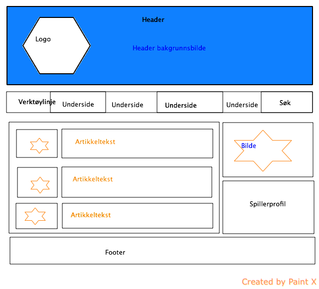

Formålet med nettsiden er å skape en hjemmeside for et idrettslaget der man kan finne relevant informasjon om laget, nyheter, bilder og kontaktinformasjon.
Se skisse for forslag til struktur på hjem-siden

Undersidene
Hjemmesiden skal ha undersider som gir brukeren tilgang til:
Kampstatestikk- Oversikt over kampresultater fra tidligere sesonger samt hvordan laget ligger an.
Stryret- Det sittende styret, deres ansvarsområder og kontaktinformasjon.
Historikk- Lagets historie: Oppstart, prestasjoner osv.
Spillerprofiler- En presentasjon av alle spillerene på laget, både damer og herrer. Her hentes profiler som fremheves på hjemsiden.
Media- Bildegallerier, videoer, og artikler.
Kontaktskjema- Mulighet for brukeren til å direkte sende en henveldelse til laget.
Nettsiden skal være på Norsk og støttes av de største nettleserne (Explorer, Mozilla Firefox, Opera, Chrome og Safari).